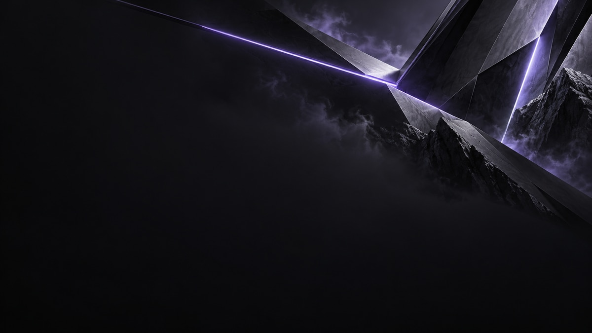
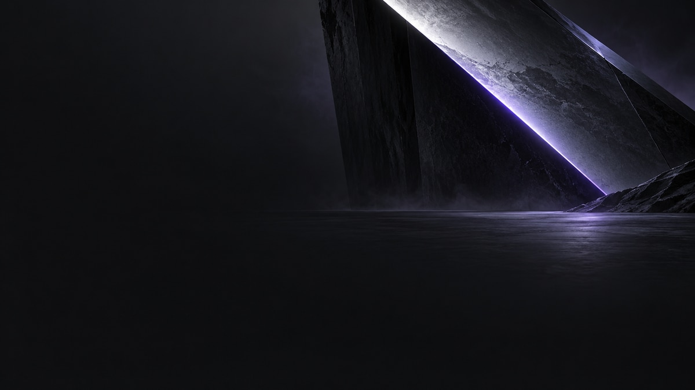
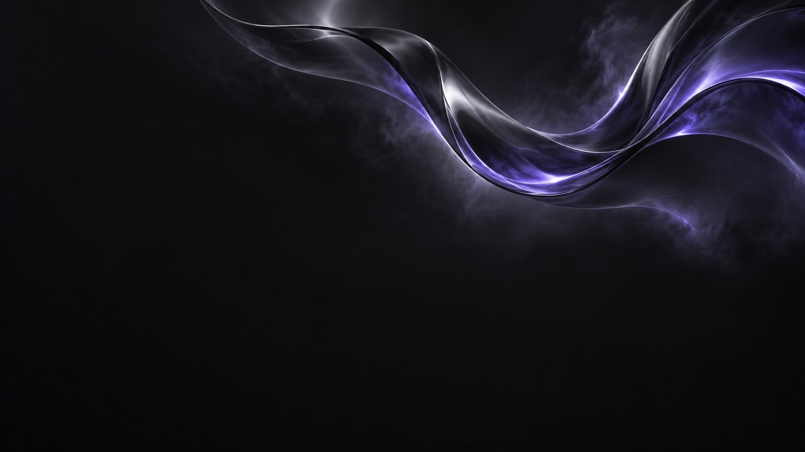

01PNG 3840 × 2160
Импульс
Острые лучи и фиолетовые грани задают движение на тёмном фоне
Рабочий стол / Обои 01–03
Три характера в одной палитре — холодный фиолетовый свет, глубокий графит и пространство для ярлыков
3840 × 2160
PNG / 16:9

Острые лучи и фиолетовые грани задают движение на тёмном фоне

Матовый графит, монолитная форма и сдержанный свет по граням

Плавное движение света и мягкие фиолетовые переходы на тёмной поверхности
Как использовать
Здесь доступны чистые фоны без логотипа и разметки
Готовый рабочий стол — фирменный знак и пустые области, ярлыки устанавливаются отдельно средствами Windows
В редакторе можно добавить фирменный знак, настроить области программ, лаунчеров и игр и экспортировать готовые обои
Программы и личный кабинет запускаются настоящими ярлыками Windows — их нужно разместить поверх обоев
Перейти в редакторФайлы 3840 × 2160 подготовлены из генеративных исходников 1672 × 941; логотип и подписи в редакторе отрисовываются отдельно